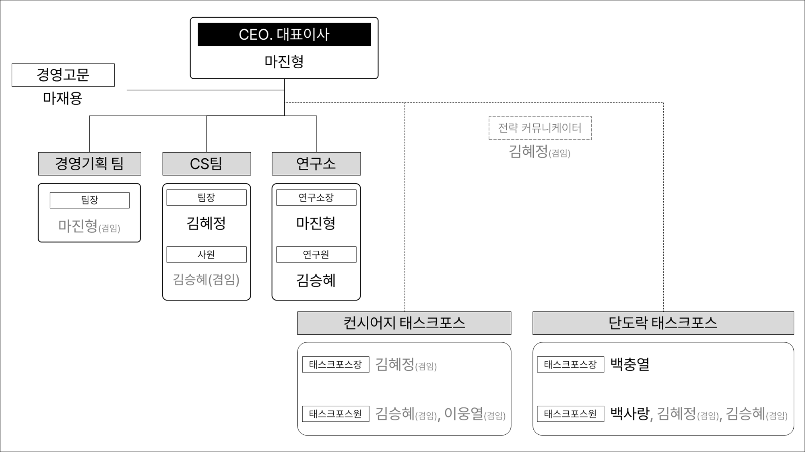

1️⃣ Metaverse에 대한 오해와 본질
많은 사람들이 Metaverse, 3D World, 가상현실을 혼동하곤 합니다. Tenacities 역시 시작은 그러했습니다. 하지만 탐구를 거듭한 결과, Metaverse의 본질을 ‘Seamless world’로 해석하게 되었습니다.
저희 Tenacities는 2022년 03월 Metaverse를 목표로 설립된 회사입니다. 다양한 시도와 실패, 경험과 성장을 반복하던 과정에서 ‘메타버스’라는 키워드는 하나의 기술 유행이 아니라 ‘하나의 세상’에 대한 질문으로 다가왔습니다. 그 질문은 결국 “修身 齊家 治社 愛天下”라는 관점으로 수렴됩니다.
Brand Sign

Tenacities의 관점에서 Metaverse는 3D/가상현실의 동의어가 아니라, 인간이 세계를 가로질러 연속적으로 살아가기 위한 조건에 관한 질문입니다. 이 페이지는 그 세계관을 먼저 읽고, 이후 CI와 연혁으로 이동하도록 구성되어 있습니다.
많은 사람들이 Metaverse, 3D World, 가상현실을 혼동하곤 합니다. Tenacities 역시 시작은 그러했습니다. 하지만 탐구를 거듭한 결과, Metaverse의 본질을 ‘Seamless world’로 해석하게 되었습니다.
‘나’라는 존재는 언제 어디서든 연속된 상태로 존재합니다. 그러나 현실의 사회 시스템은 그렇지 않습니다. 학교나 국가의 관리 시스템에 등록되기 전까지는 구성원으로 존재할 수 없는 경험처럼, 인간은 연속적이지만 World는 종종 단절됩니다.
이 맥락에서 Metaverse와 탈중앙화가 함께 논의됩니다. 이는 정치적 구호의 문제가 아니라, Seamless한 생존을 바라는 인간 본성의 문제로 이해할 수 있습니다.
Tenacities는 Seamless world 구축의 핵심 본질을 ‘주거, 식음, 노동’으로 규정합니다. AI 대체가 확대되는 미래에서도 인간이 삶의 의지를 유지하려면, 노동의 본질과 이를 지탱하는 주거·식음의 생태계가 함께 설계되어야 한다고 봅니다.
회사의 시선은 ‘修身 齊家 治社 愛天下’라는 문장으로 정리됩니다. 나와 가정, 회사를 각각 하나의 세계로 바라보며, 구성원 간 순환적 상생을 통해 더 넓은 세계와 연결되는 구조를 지향합니다.
CI는 Tenacities의 두 번째 핵심 축입니다. 로고 철학과 조직 구조를 분리된 정보 단위로 확인할 수 있도록 구성했습니다.
Logo / Emblem
열정을 상징하되 단기적 흥분이 아닌 장기적 의지를 표현합니다. 씨앗-줄기-열매, 성화, 맞잡은 두 손의 상징은 Tenacities의 가치관을 한 축으로 연결합니다.

Organization
원본 자료를 기반으로 조직도 구조를 확인할 수 있습니다. 연혁과 연결되는 실행 단위의 배치를 읽기 쉽게 유지했습니다.

메인 페이지에서는 연혁의 흐름만 제시하고, 상세 내용은 깊이 있는 하위 구조에서 탐색하도록 분리했습니다.